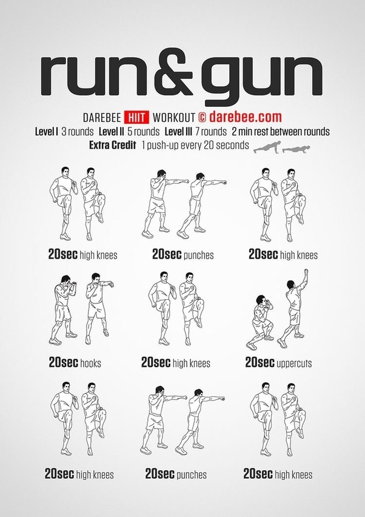

Cardio Workout Routine: Guide For Building Muscle & Strength
1. Warm up
Kick-start your workout with about 5 to 10 minutes of light cardio. Activities such as cycling, push-ups, or jogging increase blood flow and warm up your muscle groups.
It also prepares the body for the upcoming workout. You may find it helpful to include stretches for your shoulders, chest, and triceps during warm-ups.
2.Running/Jogging:
Running is a fantastic cardiovascular exercise that can help improve your cardiovascular health, stamina, and overall fitness. Whether you're a beginner or an experienced runner, structuring your running workouts can make your training more effective and enjoyable. Here's a sample running workout plan suitable for different levels:
Beginner Running Workout:
Day 1: Start with a Brisk Walk
Warm-up: 5-10 minutes of brisk walking.
Run/Walk Intervals: Alternate between 1 minute of running and 2 minutes of brisk walking. Repeat for 20-30 minutes.
Cool down: 5-10 minutes of walking.
Day 2: Rest or Cross-Train
Rest or engage in low-impact cross-training activities like cycling or swimming.
Day 3: Easy Run
Warm-up: 5-10 minutes of brisk walking.
Run at a comfortable, conversational pace for 20-30 minutes.
Cool down: 5-10 minutes of walking.
Day 4: Rest or Cross-Train
Rest or engage in low-impact cross-training.
Day 5: Long Walk or Easy Run
Choose either a long brisk walk or an easy run at a comfortable pace. Aim for 30-45 minutes.
Day 6: Rest or Cross-Train
Rest or engage in low-impact cross-training.
Day 7: Rest
Take a full rest day to allow your body to recover.
3.Cycling:
Cycling is an excellent cardiovascular exercise that provides a low-impact alternative to running. Whether you're cycling outdoors or using a stationary bike, here's a sample cycling workout plan that you can tailor to your fitness level:
Beginner Cycling Workout:
Day 1: Easy Ride
Warm-up: 5-10 minutes of easy pedaling.
Main Set: Cycle at a comfortable pace for 20-30 minutes.
Cool down: 5-10 minutes of easy pedaling.
Day 2: Rest or Active Recovery
Rest or engage in light activities like walking or yoga.
Day 3: Interval Training
Warm-up: 10 minutes of easy pedaling.
Intervals: Alternate between 1 minute of hard effort (faster pedaling or higher resistance) and 2 minutes of easy pedaling. Repeat for 6-8 intervals.
Cool down: 10 minutes of easy pedaling.
Day 4: Rest or Active Recovery
Rest or engage in light activities.
Day 5: Long Ride
Cycle at a comfortable, conversational pace for an extended duration. Aim for 30-60 minutes.
Day 6: Rest or Active Recovery
Rest or engage in light activities.
Day 7: Rest or Easy Ride
Take a full rest day or do an easy, short ride.

4. Jumping Rope:
Jumping rope is an excellent full-body workout that combines cardiovascular exercise with coordination and endurance. It's a simple and effective way to improve cardiovascular health, burn calories, and enhance overall fitness. Here's a sample jumping rope workout for various fitness levels:
* Beginner Jump Rope Workout:
1. Warm-up:
Jump in place without the rope for 2-3 minutes.
Arm circles and leg swings to loosen up.
2. Main Set:
Basic Jumping (2 minutes):
Jump over the rope with both feet together in a steady, controlled motion.
Rest (1 minute):
Light jogging in place or simple stepping side to side.
3. Alternate Foot Jump (2 minutes):
Lift one foot off the ground at a time, alternating between left and right.
Rest (1 minute):
Light jogging in place or simple stepping side to side.
4. Boxer Skip (2 minutes):
Jump on one foot for a few seconds and then switch to the other foot.
Rest (1 minute):
Light jogging in place or simple stepping side to side.
5. Side-to-Side Jumps (2 minutes):
Jump side to side over an imaginary line.
Cool Down (2-3 minutes):
Jump in place without the rope, gradually slowing down the pace.

5. Swimming:
Swimming is an excellent full-body workout that provides cardiovascular benefits while being easy on the joints. Whether you're a beginner or an experienced swimmer, here's a sample swimming workout plan that you can adapt to your fitness level:
* Beginner Swimming Workout:
1. Warm-up:
5-10 minutes of easy swimming, focusing on various strokes.
2. Main Set:
Freestyle Swim (10 minutes):
Swim at a comfortable pace, focusing on proper form and breathing.
Rest (2 minutes):
Tread water or float to catch your breath.
3. Backstroke (8 minutes):
Practice the backstroke, ensuring a steady and controlled pace.
4. Breaststroke (8 minutes):
Perform the breaststroke, emphasizing the kick and glide.
Cool Down:
5-10 minutes of easy swimming, gradually slowing down.
6. High-Intensity Interval Training (HIIT):
High-Intensity Interval Training (HIIT) is a form of cardiovascular exercise that alternates between short, intense bursts of activity and periods of rest or lower-intensity exercise. HIIT workouts are efficient and effective, offering a range of benefits including improved cardiovascular health, increased calorie burn, and time efficiency. Here's a sample HIIT workout that you can do:
HIIT Workout:
Warm-up:
5-10 minutes of light cardio (e.g., jogging in place, jumping jacks) to raise your heart rate and warm up your muscles.
Main Set:
Jumping Jacks (45 seconds):
Perform jumping jacks at a rapid pace.
Rest (15 seconds):
Active rest, such as marching in place.
Bodyweight Squats (45 seconds):
Perform bodyweight squats with proper form, focusing on depth and control.
Rest (15 seconds):
Active rest, such as light jogging in place.
Push-Ups (45 seconds):
Perform push-ups at a challenging pace, maintaining proper form.
Rest (15 seconds):
Active rest, such as high knees.
Mountain Climbers (45 seconds):
Execute mountain climbers with quick, controlled movements.
Rest (15 seconds):
Active rest, such as a low-impact exercise like stepping side to side.
Burpees (45 seconds):
Perform burpees, including the jump and a push-up if possible.
Rest (15 seconds):
Active rest, such as marching in place.
High Knees (45 seconds):
Lift your knees as high as possible, maintaining a brisk pace.
Rest (15 seconds):
Active rest, such as light jogging in place.
Repeat the circuit 2-3 times, depending on your fitness level.

7.Kickboxing:
Kickboxing is a high-energy, full-body workout that combines elements of traditional boxing with kicks from martial arts. It's not only a great way to improve cardiovascular fitness but also enhances strength, agility, and coordination. Here's a sample kickboxing workout routine that you can follow:
Kickboxing Workout:
Warm-up:
Jump Rope: 5-10 minutes to increase heart rate and warm up the entire body.
Dynamic Stretching: Include dynamic stretches for the arms, legs, and torso.
Main Set:
Jab and Cross (3 minutes):
Stand in a fighting stance and throw a quick jab (left hand) followed by a cross (right hand). Repeat, focusing on speed and form.
Front Kicks (2 minutes):
Alternate front kicks with each leg, maintaining balance and control. Engage your core for stability.
Hook Punches (3 minutes):
Throw hook punches (circular punches) with both hands. Pivot on your back foot and engage your hips for power.
Roundhouse Kicks (2 minutes):
Perform roundhouse kicks, lifting your knee and then extending your leg in a circular motion. Alternate between legs.
Knee Strikes (2 minutes):
Bring your knee up towards your chest and perform knee strikes, alternating between legs.
Upper Cuts (3 minutes):
Execute uppercut punches, focusing on the upward motion. Engage your core and pivot on your feet.
Side Kicks (2 minutes):
Perform side kicks, extending your leg to the side. Keep your core engaged and maintain balance.
Combination Drills (5 minutes):
Combine punches and kicks into various combinations. For example, jab-cross-front kick or hook-uppercut-roundhouse kick.
Speed and Agility (3 minutes):
Use agility drills such as quick lateral movements, ducking, and weaving. This enhances footwork and overall agility.